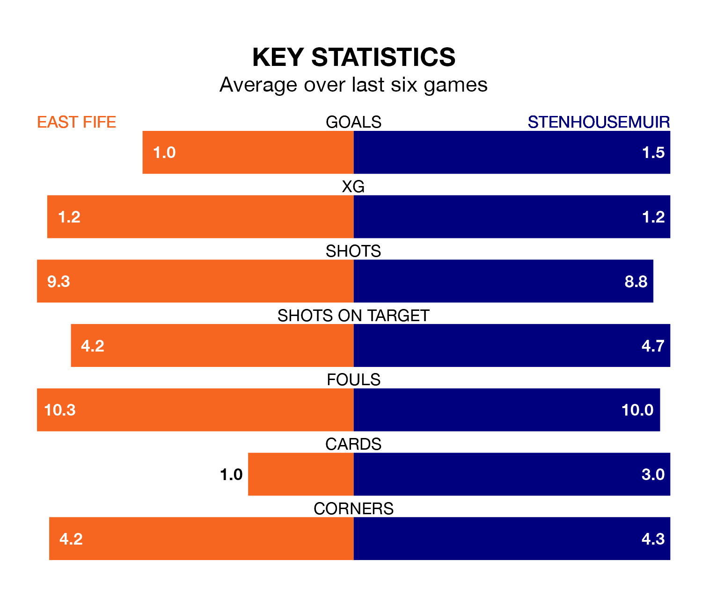

Stenhousemuir are strong favourites to take all three points despite East Fife's home advantage in Saturday's match at the MGM Timber Bayview Stadium.
*Betting Company* are offering odds of 1.93 on Stenhousemuir sealing the win, with the visitors sitting first in League Two table.
East Fife, who are sixth in the league and 30 points behind the Warriors, are priced at 3.51 to win. A draw is set at 3.64.
With 40 goals in 23 games so far this season, Stenhousemuir are the league's highest scorers with 1.7 goals per game. And they are conceding fewer than average, letting in 15 goals at a rate of 0.7 per game.
East Fife, meanwhile, are below average scorers, with 1.2 goals per game, compared to a league average of 1.3. They have conceded 1.3 goals per game.
In Matthew Aitken, the Warriors have the league's most on-form striker so far this season. He has notched 13 goals in 23 appearances.
His goal rate of one every 149 minutes is quicker than that of Nathan Austin, the Fifers's top scorer with a goal every 192 minutes, and a total of nine goals in 22 games.
In the last 10 years, East Fife and Stenhousemuir have played each other on 18 occasions. East Fife won six of them, Stenhousemuir seven, and they drew five times.
On average, the Fifers scored 1.2 goals and the Warriors 1.2 in those matches.
Their last meeting was on December 16, when Stenhousemuir won 2-1 at home.
The hosts are in mixed form in League Two, with two wins and two draws from their last six games.
With five wins and one loss over that period, the away side's form is much better – they have taken 15 points from 18, compared to East Fife's eight.
East Fife's last match was on February 3, a 1-0 loss against Elgin City.
Stenhousemuir beat Dumbarton 1-0 last time out, also on February 3, with Ross Taylor on the scoresheet.
Updated: 10:01 (UTC), 06/02/24